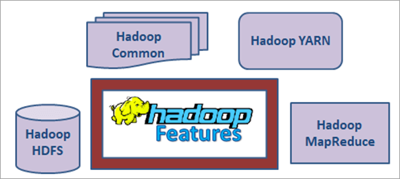
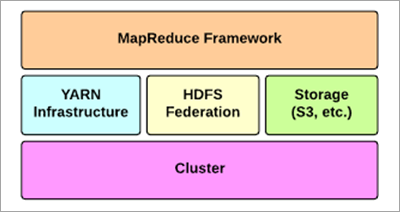
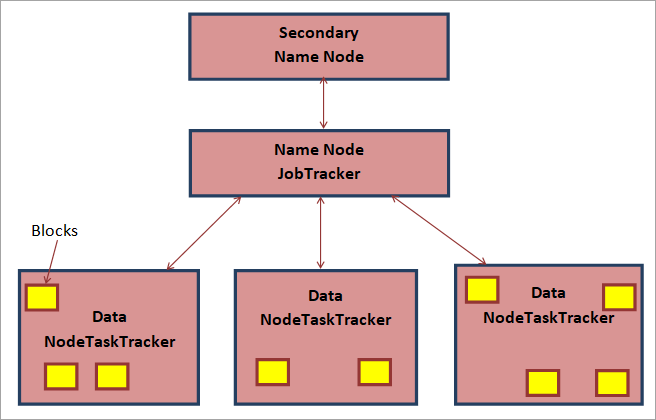

hadoop是什么？
Apache Hadoop是一个开源框架，用于管理所有类型的数据（结构化，非结构化和半结构化）。
众所周知，如果我们想处理，存储和管理我们的数据，那么RDBMS是最好的解决方案。但是，数据应采用结构化格式，以便使用 RDBMS 进行处理。此外，如果数据大小增加，则RDBMS无法处理它，我们需要定期执行数据库清理。
这可能会导致历史数据丢失，并且无法在某些行业（如天气预报，银行，保险，销售等）中生成准确可靠的结果。RDBMS的另一个问题是，如果主服务器出现故障，那么我们可能会丢失重要数据并遭受很多损失。
在本教程中，我们将看到如何使用Apache Hadoop克服这些问题。
Hadoop是一个分布式文件系统，可以存储大量数据（PB级和TB级数据）。数据处理速度也非常快，并且具有非常高的容错系统，因此可提供可靠的结果。
Hadoop是一个基于Java的开源编程框架，支持在分布式计算环境中存储和处理大型数据集。
Hadoop基于使用商用硬件的集群概念。它不需要任何复杂的配置，我们可以用更便宜，简单和轻量级的配置硬件建立Hadoop环境。
简而言之，群集概念是以复制格式存储在多台计算机上的数据，因此，当数据所在的某个位置发生任何问题或灾难时，必须在另一个位置上安全地提供该数据的重复副本。
hadoop VS RDMBS
| Feature | Hadoop | RDBMS |
|---|---|---|
| 体系结构 | Hadoop基于HDFS，MapReduce和YARN。 | RDBMS 基于 ACID 属性。 |
| 规模 | 可以处理大量数据。 | RDBMS 无法处理大量数据。 |
| 数据的种类/类型 | 可以处理结构化，半结构化和非结构化数据，如视频，图像，CSV文件，xml等。 | 仅处理结构化数据。 |
| 速度 | 快速处理大量数据。 | 处理大量数据时非常慢。 |
| 吞吐量 | 高吞吐量。 | 吞吐量低。 |
| 容错 | 非常好 | 如果主服务器出现故障，则无法恢复丢失的数据。 |
| 存储 | 非常高的存储容量。 | 无法存储大数据。 |
| 可靠性 | 非常可靠，可生成准确的历史和当前报告。 | 在大数据方面不可靠。 |
hadoop 功能
Hadoop框架

- Hadoop yarn
- Hadoop common
- Hadoop HDFS(Hadoop Distributed File System)
- Hadoop Mapreduce
#1）Hadoop YARN：YARN代表**”Y**et Another Resource Negotiator”，用于管理云的集群技术。它用于作业计划。
#2）Hadoop Common：这是用于与Hadoop的其他功能（如YARN，MapReduce和HDFS）进行通信的详细库或实用程序。
#3）Hadoop HDFS：分布式文件系统在Hadoop中用于存储和处理大量数据。此外，它还用于访问群集中的数据。
#4） Hadoop MapReduce： MapReduce是Hadoop的主要功能，负责处理集群中的数据。它用于作业调度和数据处理监控。
Hadoop 架构
Hadoop组件：
- HDFS
- MapReduce
- YARN

这些是Hadoop架构的三个重要组成部分。我们还应该了解架构的一些术语或概念，并了解它们是如何工作的。
- 管理节点–manager node
- 数据节点–data node
- 辅助管理节点–secondary manager node
- 块–blocks
1）name node–管理节点
管理节点是 HDFS 中的主节点。它包含HDFS的元数据，如文件信息，目录结构，块信息以及数据节点的所有信息等。管理节点仅负责从客户端访问的数据或文件。它跟踪文件中的所有事务或所做的更改。
它主要适用于两个文件，即FsImage和EditLogs。Name Node有一个JobTracker，其中包含数据节点的所有详细信息，例如哪个数据节点具有什么任务，每个数据节点有多少块，每个数据节点的检测信号，群集中的作业计划详细信息等。
简而言之，我们可以说 JobTracker 包含每个数据节点的 TaskTracker。
2） data node – 数据节点
数据节点是HDFS中的从节点。数据节点负责数据的实际存储和处理。它的主要任务是将作业划分为三个块，并将其存储在不同的数据节点中。之后开始处理数据。
此外，它还具有TaskTracker，它具有每个块的完整信息，以及哪个块负责哪个任务，哪些块完成了任务等，并且在处理数据后，它将信息发送到manager Node。每次数据节点启动时，它都会再次将所有信息发送到管理节点。
3）辅助管理节点–secondary manager node
辅助管理节点用于容错情况。在两种情况下，管理节点已关闭，并且整个 Hadoop 结构将失败，因为管理节点是单点故障。
（i）如果管理节点由于任何问题而重新启动，那么由于它具有大量数据而再次出现，那么恢复它需要时间。
（ii）在管理节点崩溃的情况下，所有HDFS数据都将丢失并且无法再次恢复，因为管理节点是单点故障。因此，为了克服这些问题，辅助管理节点就在那里。它还包含与管理节点相同的命名空间映像和编辑日志。
在一段时间后，它将复制命名空间映像，并从管理节点更新编辑日志。因此，在管理节点失败的情况下，辅助管理节点进入图片并表现得与主名称节点类似。由于此过程，它可以防止完全失败。
4）blocks–块
块是HDFS中最小的单位。Hadoop可以处理大量的文件，因为它将其分成小块。我们可以说，块只不过是一个大文件的数据。每个块的大小为128MB。这些块保存在数据节点中并处理数据。

Hadoop 分布式文件系统 （HDFS） 是 Hadoop 集群中使用的文件系统。HDFS主要用于在集群中存储Hadoop数据。HDFS通常致力于顺序数据处理。正如我们已经知道的那样，它基于主从架构。
集群的所有元数据都保存在 JobTracker 的 Name 节点上，实际数据存储在 TaskTracker 的 HDFS 的数据节点中。
MapReduce负责数据的处理。每当任何文件进入集群进行处理时，第一个数据节点都会将其划分为块，每个块包含64MB的数据，它可以存储128MB。然后，每个块将复制两次，并存储在群集中任何位置的不同数据节点中。
所有这些信息都将发送到名称节点，名称节点将以元数据的形式存储此信息。然后，数据的实际处理将启动数据节点，并将每三秒向名称节点发送一次检测信号，以便名称节点具有此数据节点正在处理的信息。
如果数据节点中的任何人发送检测信号失败，则名称节点将再次在另一个数据节点上创建该块的副本并开始处理。
所有这些信息或快照将存储在FsImage中，如果完成任何事务，则编辑日志合并新信息并始终保留日志的新副本。
将采用首先完成任务的块，数据节点将向名称节点发送信息，名称节点将采取相应的操作。
在整个过程中，YARN将支持并向系统提供所需的资源，因此不会影响数据处理和速度。处理数据后，结果将保存在HDFS中以供进一步分析。